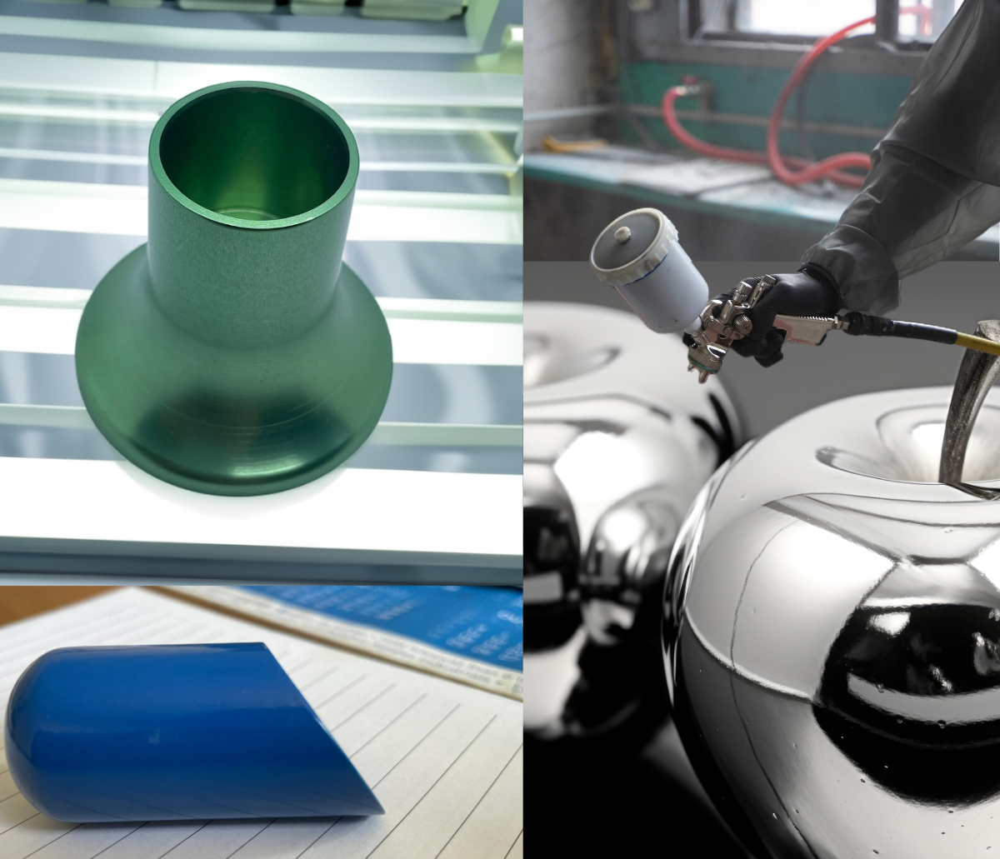

When it comes to enhancing the durability, appearance, and performance of metal components, surface finishing techniques play a crucial role. Among the most popular methods are anodizing, static painting, and chroming. Each of these processes has unique characteristics and applications, making them suitable for different purposes. Let's explore these techniques in detail.
1️⃣ Anodizing
What is Anodizing?
Anodizing is an electrochemical process that transforms the metal surface into a durable, corrosion-resistant, anodic oxide finish. This process is commonly used for aluminum but can also be applied to other non-ferrous metals.
How It Works:
Preparation: The metal surface is thoroughly cleaned to remove any impurities.
Electrolytic Bath: The metal is submerged in an electrolytic solution, and an electric current is passed through it.
Oxide Layer Formation: This process creates a thick oxide layer on the surface, which can be dyed in various colors.
Benefits:Enhanced corrosion resistanceImproved wear resistanceAesthetic appeal with a range of color optionsEnvironmentally
friendly.
Applications:Anodizing is widely used in the aerospace, automotive, and consumer electronics industries for components such as aircraft parts, car body panels, and smartphone casings.
2️⃣ Static painting
What is Static Painting?
Static painting, also known as electrostatic painting, involves applying a charged paint to a grounded metal surface. This technique ensures an even coat and reduces overspray, making it an efficient and effective painting method.
How It Works:
Preparation: The metal surface is cleaned and pre-treated to ensure proper adhesion.
Charging the Paint: Paint particles are electrically charged using a special spray gun.
Application: The charged paint is sprayed onto the grounded metal surface, where it adheres uniformly.
Curing: The painted component is baked in an oven to cure the paint, resulting in a smooth, durable finish.
Benefits:Even and uniform coatingReduced paint waste and oversprayHigh efficiency and fast applicationEnhanced durability and resistance to chipping and peeling
Applications:Static painting is commonly used in the automotive, furniture, and appliance industries for items such as car parts, metal furniture, and household appliances.
3️⃣ Chroming
What is Chroming?Chroming, or chrome plating, involves applying a thin layer of chromium onto a metal surface through electroplating. This process provides a shiny, reflective finish and excellent corrosion resistance.
How It Works:
Preparation: The metal surface is cleaned and polished to remove any imperfections.
Electroplating: The metal is submerged in a chromic acid solution, and an electric current is passed through it to deposit a layer of chromium.
Finishing: The plated component is rinsed and polished to achieve a high-gloss finish.
Benefits:Superior corrosion resistanceHigh aesthetic appeal with a reflective, mirror-like finishIncreased hardness and durabilityEasy to clean and maintain
Applications:Chroming is widely used in the automotive, motorcycle, and household hardware industries for parts like bumpers, rims, exhaust pipes, and bathroom fixtures.
Conclusion
Anodizing, static painting, and chroming are essential surface finishing techniques that enhance the functionality and appearance of metal components. Whether you need improved corrosion resistance, a uniform paint coat, or a shiny reflective finish, each of these methods offers unique advantages tailored to specific industrial applications. Understanding these processes helps in selecting the right surface finishing technique for your project's needs.